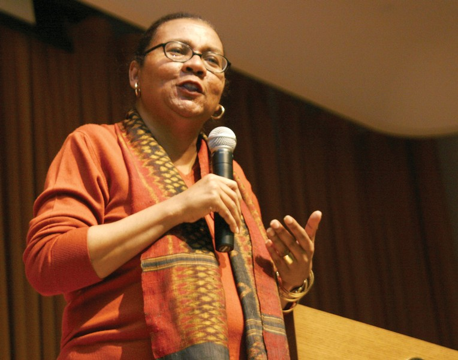

Feminista intersseccional

Gloria Jean Watkins, mais conhecida pelo pseudônimo bell hooks ,é uma autora, teórica feminista e artista. Watkins publicou mais de trinta livros e numerosos artigos acadêmicos. Numa perspectiva pós-moderna, e influenciada pela pedagogia crítica de Paulo Freire, o trabalho de hooks aborda raça, classe e gênero.